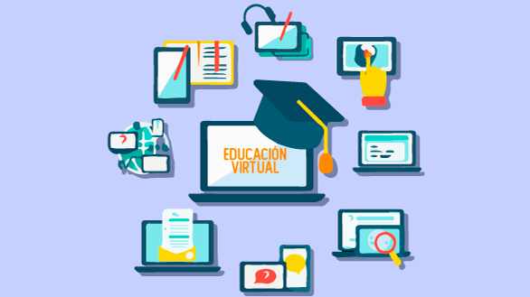

- 

La Universidad Pedagógica y Tecnológica de Colombia, ofrece a los estudiantes tres espacios clave en
la modalidad a distancia, para administrar y gestionar los procesos académicos y administrativos: Aula
Virtual, Sistema de Registro Académico - SIRA y correo electrónico.En la universidad se utiliza el Aula
Virtual Moodle desde el año 2004, actualmente se utilizan diferentes accesos de acuerdo con la modalidad
del programa académico.Información tomada de esta dirrecion Web